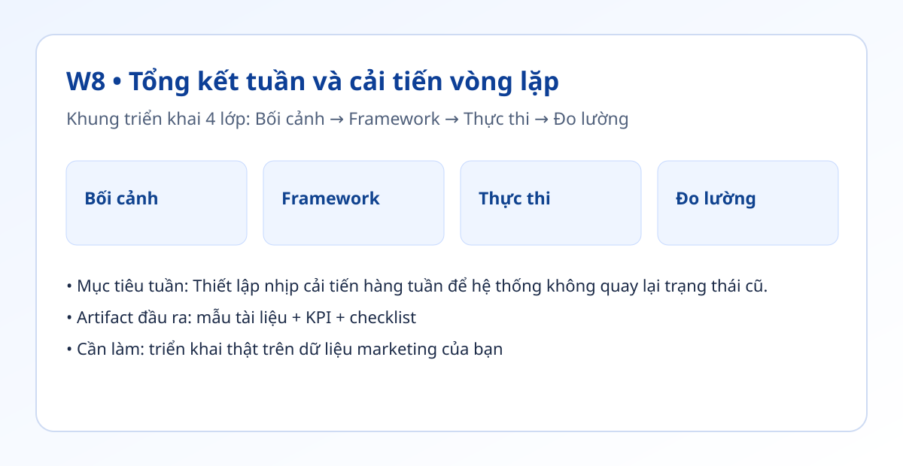

Hình trực quan mô-đun

Bối cảnh thực tế
- Kể cả khi luồng tốt, nếu không có tổng kết tuần thì sau 2-3 tuần mọi thứ thường quay lại lối cũ.
- Tổng kết hiệu quả cần ngắn gọn, có người chịu trách nhiệm và hạn chót rõ.
- Tuần này bạn thiết kế vòng cải tiến bền vững cho đội hoặc cho chính mình.
Khung tư duy cốt lõi
- Khung Giữ / Dừng / Cải tiến.
- Mỗi vòng tổng kết chỉ chốt tối đa 2 hành động có KPI.
- Mỗi hành động phải có người phụ trách và ngày kiểm tra lại.
Quy trình triển khai chi tiết
- Bước 1: Tổng hợp dữ liệu tuần: KPI, lỗi, thời gian, phản hồi.
- Bước 2: Chia thành 3 nhóm Giữ/Dừng/Cải tiến.
- Bước 3: Chọn 2 hành động ưu tiên có thể đo trong tuần kế tiếp.
- Bước 4: Gán người phụ trách + hạn chót + chỉ số thành công.
- Bước 5: Theo dõi thực hiện vào giữa tuần và cuối tuần.
- Bước 6: Đánh giá lại hành động ở vòng tổng kết kế tiếp.
Tình huống nhỏ với số liệu
| Hành động cải tiến | KPI theo dõi | Chênh lệch tuần sau |
|---|---|---|
| Rút checklist QA từ 9 xuống 5 mục | Thời gian QA | -20% |
| Chuẩn hóa brief theo mẫu | Số vòng sửa | -30% |
| Chốt giờ rà soát cố định | Tỷ lệ đúng lịch | +15pt |
Kết luận: Vòng tổng kết ngắn nhưng liên tục giúp cải tiến tích lũy theo tuần và giảm nguy cơ tụt hiệu suất.
Sản phẩm bàn giao tuần này
- Mẫu tổng kết tuần 1 trang.
- Bảng nhật ký hành động có người phụ trách và hạn chót.
- Báo cáo trước/sau của 2 hành động ưu tiên.
Bài tập thực hành (45-60 phút)
- Chạy 2 vòng tổng kết liên tiếp trong 2 tuần.
- Mỗi vòng chọn tối đa 2 hành động.
- Chứng minh ít nhất 1 hành động tạo chênh lệch dương.
Thang đo hoàn thành
| Mức | Mô tả |
|---|---|
| Mức 0 | Tổng kết chỉ ghi chép |
| Mức 1 | Có hành động nhưng không người phụ trách/hạn chót |
| Mức 2 | Có người phụ trách + KPI |
| Mức 3 | Hành động có kết quả đo được sau 1 tuần |
Lỗi thường gặp
- Ôm quá nhiều hành động trong một vòng.
- Hành động không đo lường được.
- Không kiểm tra lại vào tuần sau.
Video thực hành (tùy chọn)
Phần học chính đã đầy đủ bằng văn bản và ví dụ. Nếu bạn muốn xem thao tác thực tế, dùng các video gợi ý sau:
Đánh dấu tiến độ
Tuần này chưa hoàn thành
Đã hoàn thành tuần 8